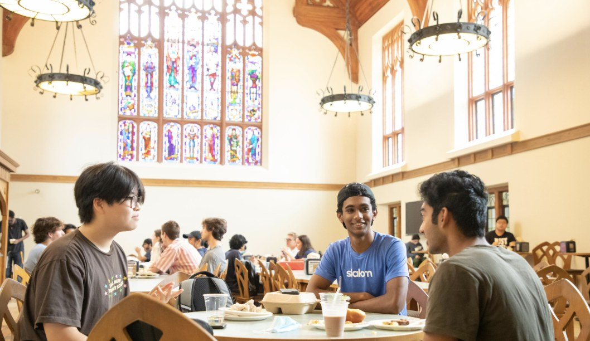
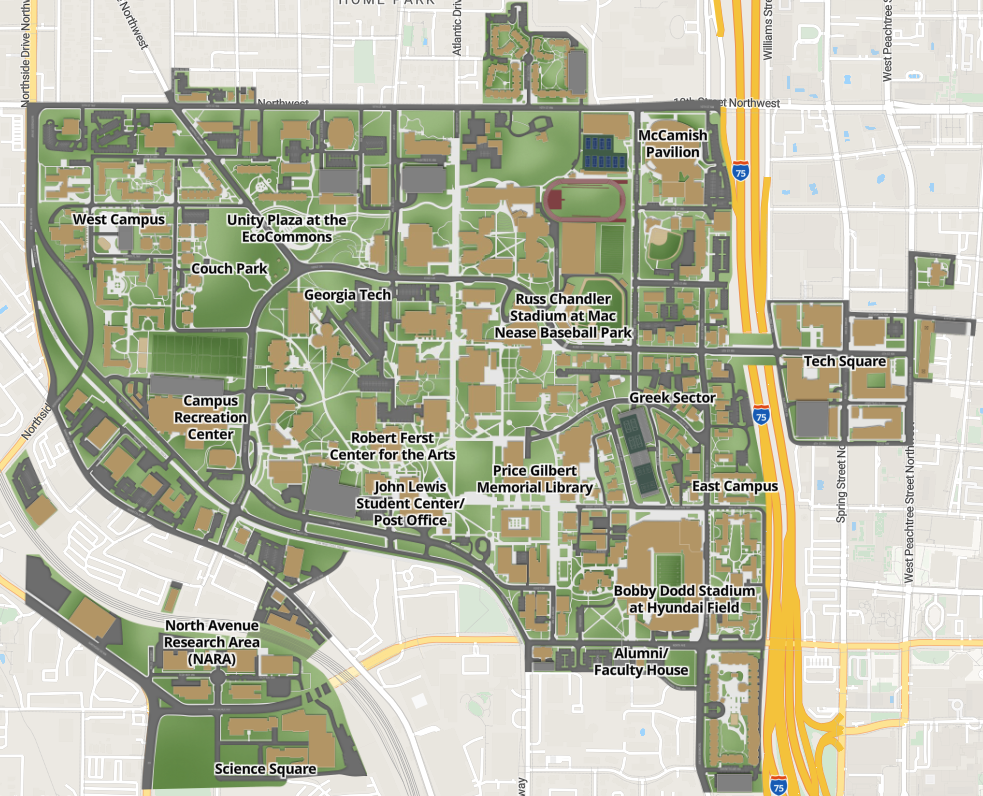
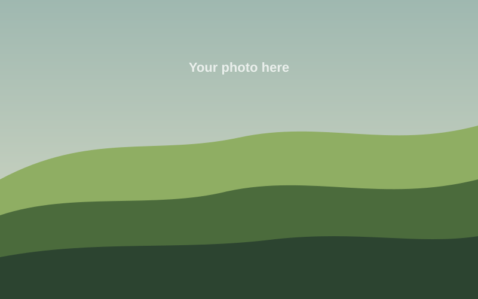
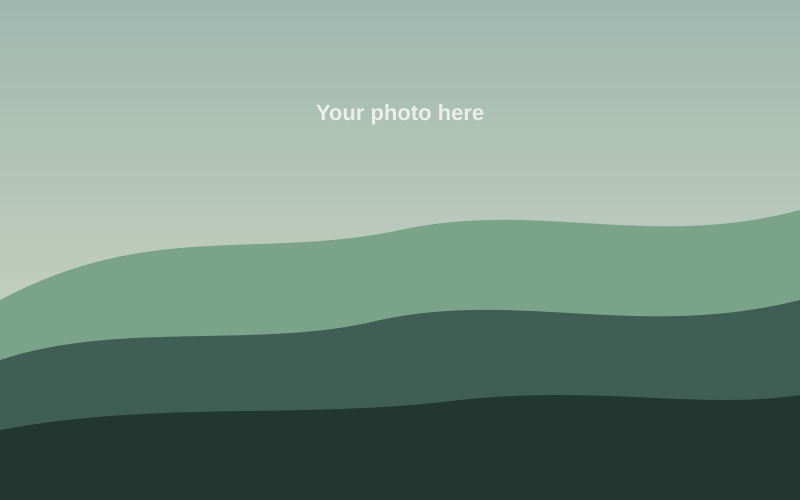
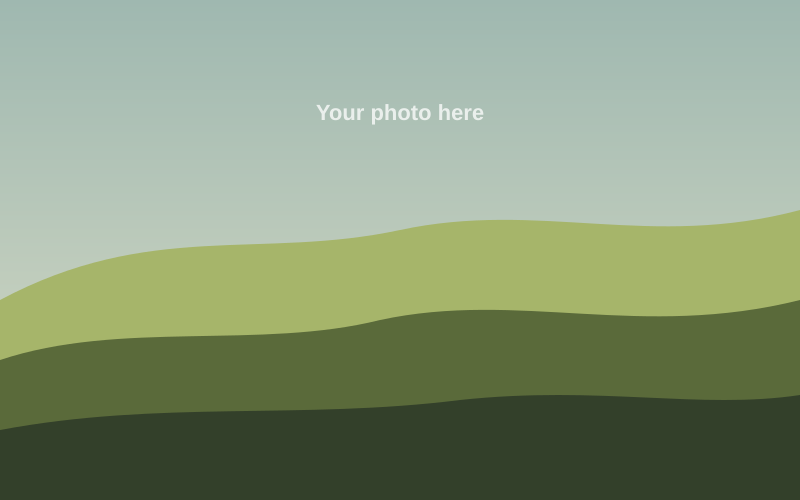

Fed and Focused
No Yellow Jacket should have to choose between groceries and grades. Find free food on campus, and learn why what you eat matters.
ResourcesResources
Find sign up forms and a map of where all your resources are located
Sign up
Find us on campus
Campus map
Key spots (tap a pin for directions)

Original Klemis KitchenLocated in the Bioquad. Meals from the dining halls, food from grocery stores, and a variety of shelf-stable items are available here.
Klemis 489In the Clough Undergraduate Learning Center, Room 489, for students who need to grab a quick meal.
Community FridgeAt Grace House (182 Fifth Street, between Techwood and Fowler Streets) can be found under the back deck. The food options is similar to what’s available at the Original Klemis Kitchen, but is open to the entire campus 24 / 7.
Eat Healthy
Intro to your healthy eating info.

Tip one
Short info here.

Tip two
Short info here.

Tip three
Short info here.
Sources
- Author, A. (Year). Title of the page or article. Site Name. https://example.com
- Author, B. (Year). Title of the page or article. Site Name. https://example.com